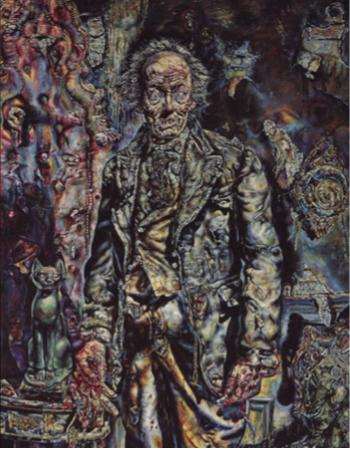
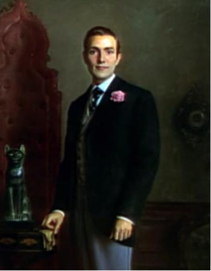

Your Portrait:
 You Lose! ;(
That was a good attempt! However, you didn't beat this minigame.
When you are ready, proceed to the next game by pressing the "Next Game" button.
You Win! :)
You did it! Your efforts paid off, and your portrait has improved.
When you are ready, proceed to the next game by pressing the "Next Game" button.
You have completed all the games! Go to the blue status bar to see how you did.